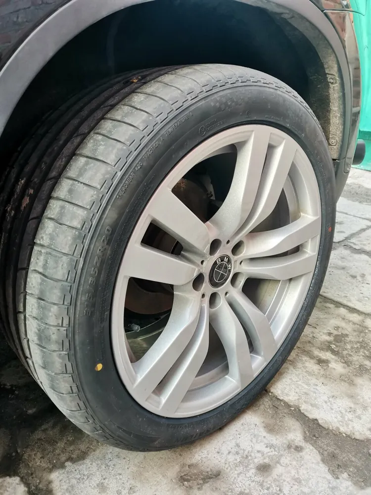
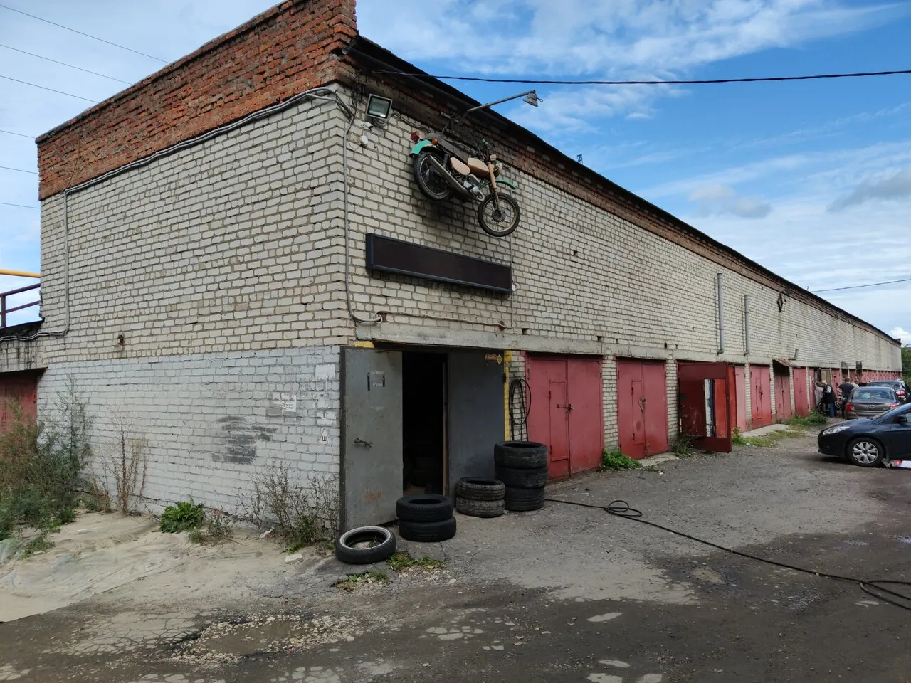
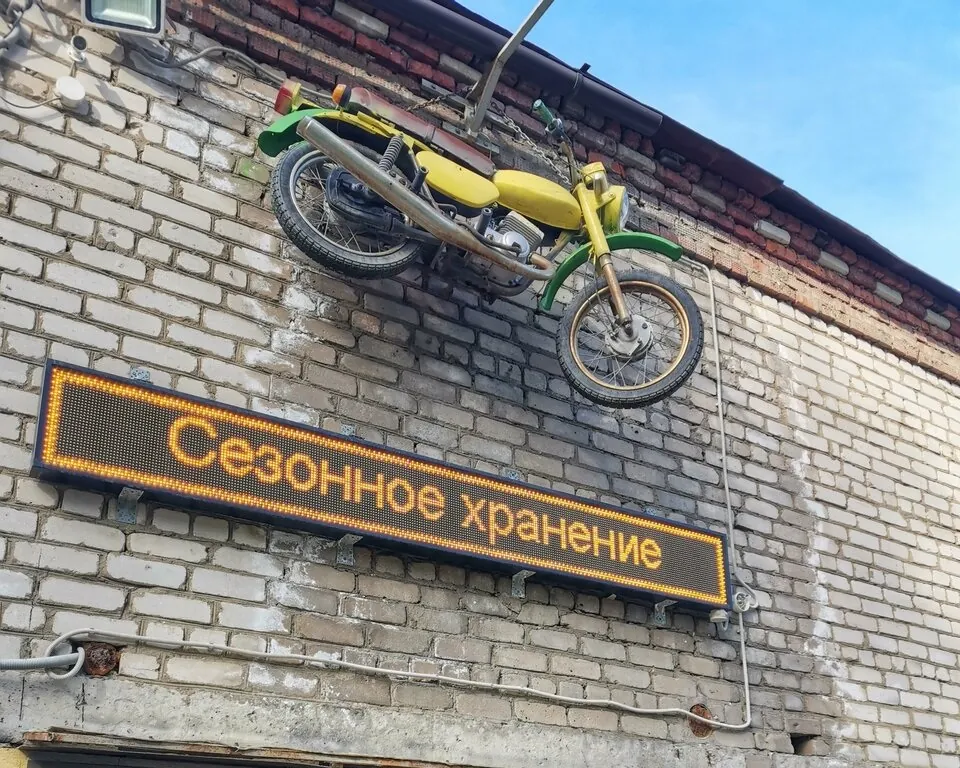
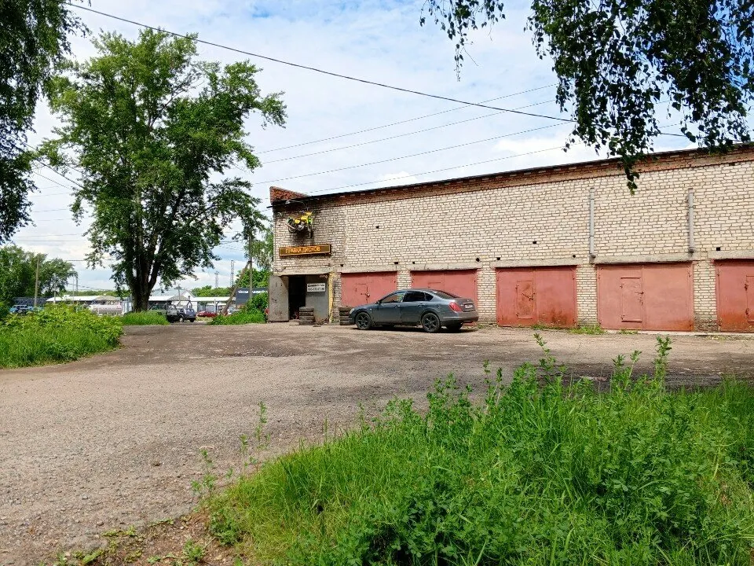

Шиномонтаж и балансировка
Легковые, кроссоверы, широкая резина с низким профилем.
«Единственное место, где 20 радиус с низким профилем сделали и первый раз отбалансировали с первого раза так, что ни единого намека на биение»Денис Брылев
Коломна, Митяево · каждый день 9–19
Шиномонтаж для машин и мотоциклов: переобувка и балансировка, ремонт проколов и вулканизация, правка и варка дисков, сезонное хранение колёс.
«Сделали из невозможного возможное»Павел Королев
Легковые, кроссоверы, широкая резина с низким профилем.
«Единственное место, где 20 радиус с низким профилем сделали и первый раз отбалансировали с первого раза так, что ни единого намека на биение»Денис Брылев
«Отремонтировали литой диск, выправили. Делали тщательно, старались.»Wik H.
«указали что неправильно два установлена заплатка в другой шиномонтаже , быстро исправили это»Vitaminka

«от покраски и ремонта дисков до простой вулканизации , балансировки и замены сосков, нипилей и колпачков.»Игорь Фомиченко
Старую резину можно оставить у нас – не нужно искать, куда её деть.
Это написано прямо на вывеске: «Авто-мото шиномонтаж, правка дисков». И в отзывах:
Назовите модель и размер колеса при записи по телефону.


Не нужно возить колёса на балкон и обратно: переобулись – второй комплект остался на хранении до следующего сезона. Стоимость: {{цена хранения}}
«Есть выездной монтаж и хранение»Пономарёв Виталий
Цена зависит от радиуса, профиля и того, что случилось с колесом. Назовите машину и размер – подскажем цену.
«Отдал две восемьсот за 16 диск (две - ремонт, восемьсот - шиномонтаж). Я доволен.» – Wik H., отзыв на Яндекс Картах. Гарантия: {{условия гарантии}}
4,9163 оценки и 87 отзывов на Яндекс Картах
Сделали из невозможного возможное , ценник за качество соответствующий , ребята быстро работают и знают своё дело , прокол, боковой порез , кривой диск ? Это к ним 100%
Оперативно и качественно переобули наш BMW X6. Резина большой ширины и с низким профилем. Перебортировали, отбалансировали, никаких проблем при езде, ни вибраций, ни биения. В процессе выявили, что один из дисков деформирован, выправили, всё отлично 👌 Ребята знают своё дело, позитивные, с хорошим оснащением. Рекомендую!
Заезжал на мотошиномонтаж. Колесо спицованное на гуся переобули, отбалансировали, обратили внимание на датчик давления шин (сами осведомлены, знают что делать чтобы не повредить). Работают быстро, стоимость умеренная. И живая очередь, а не по записи как в радиусе
Единственное место, где 20 радиус с низким профилем сделали и первый раз отбалансировали с первого раза так, что ни единого намека на биение
Был вчера. Отремонтировали литой диск, выправили. Делали тщательно, старались. Отдал две восемьсот за 16 диск (две - ремонт, восемьсот - шиномонтаж). Я доволен.
Обращался не один раз, только положительные эмоции. Всегда отвественное отношение. Что шиномонтаж, что правка дисков. Делают всё качественно. Всегда можно получить качественную консультацию. Рекомендую.
Лучшая шиномонтажка в городе. Лучше предварительно звонить. Могут заварить диски, покрасить порошковой краской, и оставить на хранение резину.
Быстро и качественно , указали что неправильно два установлена заплатка в другой шиномонтаже , быстро исправили это , так же есть правка и варка дисков
Парень молодец! Работал в выходной, к тому же праздничный. На звонок ответил сразу и согласился подождать немного, пока доеду, хотя уже собирался домой. А дело было вечером, перед закрытием. Быстро и недорого починил колëсико,👍 А была проездом через Коломну, с детьми.
Одно из немногих мест где переобувают и балансируют мото шины в Коломне. Обращаюсь не первый раз все устраивает! Ценник приемлемый нареканий нет. Спасибо!
Отличные ребяты . Делают все по колесам; от покраски и ремонта дисков до простой вулканизации , балансировки и замены сосков, нипилей и колпачков.
Отлично. Рекомендую. Переобуваюсь и ремонтирую резину только у них. Ребята - молодцы. Делают быстро, качественно и не дорого.
Огромная благодарность Александру!!! Договорились по телефону, приехал всё по времени...Поправил диски, поставил резину...Всё быстро и качественно!!! 👍🤝 Рекомендую!!!
Обратился в это место чтобы купить грузики для балансировки так как надо было срочно их найти. Я был приятно удивлен когда сотрудники бесплатно мне их отдали без чего либо взамен. Благодаря такому отношению, буду пользоваться и рекомендовать данный шиномонтаж.
Прекрасно. Записался. Приехал во время. Помогли. Поговорили по душам. Советую. Не обманут не прикрутят сверху. Молодцы.

Открыть на Яндекс КартахМаршрут до шиномонтажа